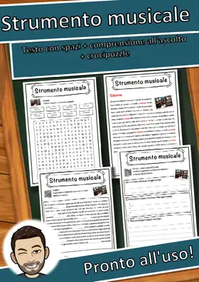

Musica
79 schede in italiano sul tema «Musica», pronte da stampare e con soluzioni.
79 materiali
Classe

Strumento musicale – Scheda: testo con spazi vuoti, comprensione all'ascolto e crucipuzzle

Pianoforte – Scheda: testo con spazi vuoti, comprensione all'ascolto e crucipuzzle

Musica elettronica – Scheda: testo con spazi vuoti, comprensione all'ascolto e crucipuzzle

Musical – Scheda: testo con spazi vuoti, comprensione all'ascolto e crucipuzzle

Musica pop – Scheda: testo con spazi vuoti, comprensione all'ascolto e crucipuzzle

Musica country – Scheda: testo con spazi vuoti, comprensione all'ascolto e crucipuzzle

Compositore – Scheda: testo con spazi vuoti, comprensione all'ascolto e crucipuzzle

Altipiano svizzero – Scheda: testo con spazi vuoti, comprensione all'ascolto e crucipuzzle
Concertina Scheda di musica: testo con spazi vuoti, comprensione all'ascolto e crucipuzzle
Concertina Scheda di musica: testo con spazi vuoti, comprensione all'ascolto e crucipuzzle
Theremin Scheda di musica: testo con spazi vuoti, comprensione all'ascolto e crucipuzzle
Theremin Scheda di musica: testo con spazi vuoti, comprensione all'ascolto e crucipuzzle
Glockenspiel Scheda di musica: testo con spazi vuoti, comprensione all'ascolto e crucipuzzle
Glockenspiel Scheda di musica: testo con spazi vuoti, comprensione all'ascolto e crucipuzzle
Clavicembalo Scheda di musica: testo con spazi vuoti, comprensione all'ascolto e crucipuzzle
Clavicembalo Scheda di musica: testo con spazi vuoti, comprensione all'ascolto e crucipuzzle
Cornamusa Scheda di musica: testo con spazi vuoti, comprensione all'ascolto e crucipuzzle
Cornamusa Scheda di musica: testo con spazi vuoti, comprensione all'ascolto e crucipuzzle
Tam-tam Scheda di musica: testo con spazi vuoti, comprensione all'ascolto e crucipuzzle
Tam-tam Scheda di musica: testo con spazi vuoti, comprensione all'ascolto e crucipuzzle
Tamburo a cornice Scheda di musica: testo con spazi vuoti, comprensione all'ascolto e crucipuzzle
Tamburo a cornice Scheda di musica: testo con spazi vuoti, comprensione all'ascolto e crucipuzzle
Koto Scheda di musica: testo con spazi vuoti, comprensione all'ascolto e crucipuzzle
Koto Scheda di musica: testo con spazi vuoti, comprensione all'ascolto e crucipuzzle
Charango Scheda di musica: testo con spazi vuoti, comprensione all'ascolto e crucipuzzle
Charango Scheda di musica: testo con spazi vuoti, comprensione all'ascolto e crucipuzzle
Bouzouki Scheda di musica: testo con spazi vuoti, comprensione all'ascolto e crucipuzzle
Bouzouki Scheda di musica: testo con spazi vuoti, comprensione all'ascolto e crucipuzzle
Darabouka Scheda di musica: testo con spazi vuoti, comprensione all'ascolto e crucipuzzle
Darabouka Scheda di musica: testo con spazi vuoti, comprensione all'ascolto e crucipuzzle
Tabla Scheda di musica: testo con spazi vuoti, comprensione all'ascolto e crucipuzzle
Tabla Scheda di musica: testo con spazi vuoti, comprensione all'ascolto e crucipuzzle
Erhu Scheda di musica: testo con spazi vuoti, comprensione all'ascolto e crucipuzzle
Erhu Scheda di musica: testo con spazi vuoti, comprensione all'ascolto e crucipuzzle
Oud Scheda di musica: testo con spazi vuoti, comprensione all'ascolto e crucipuzzle
Oud Scheda di musica: testo con spazi vuoti, comprensione all'ascolto e crucipuzzle
Washboard Scheda di musica: testo con spazi vuoti, comprensione all'ascolto e crucipuzzle
Washboard Scheda di musica: testo con spazi vuoti, comprensione all'ascolto e crucipuzzle
Campanaccio Scheda di musica: testo con spazi vuoti, comprensione all'ascolto e crucipuzzle
Campanaccio Scheda di musica: testo con spazi vuoti, comprensione all'ascolto e crucipuzzle
Legnetti Scheda di musica: testo con spazi vuoti, comprensione all'ascolto e crucipuzzle
Legnetti Scheda di musica: testo con spazi vuoti, comprensione all'ascolto e crucipuzzle
Güiro Scheda di musica: testo con spazi vuoti, comprensione all'ascolto e crucipuzzle
Güiro Scheda di musica: testo con spazi vuoti, comprensione all'ascolto e crucipuzzle
Campana tibetana Scheda di musica: testo con spazi vuoti, comprensione all'ascolto e crucipuzzle
Campana tibetana Scheda di musica: testo con spazi vuoti, comprensione all'ascolto e crucipuzzle
Kazoo Scheda di musica: testo con spazi vuoti, comprensione all'ascolto e crucipuzzle
Kazoo Scheda di musica: testo con spazi vuoti, comprensione all'ascolto e crucipuzzle
Sousafono Scheda di musica: testo con spazi vuoti, comprensione all'ascolto e crucipuzzle
Sousafono Scheda di musica: testo con spazi vuoti, comprensione all'ascolto e crucipuzzle
Viola da gamba Scheda di musica: testo con spazi vuoti, comprensione all'ascolto e crucipuzzle
Viola da gamba Scheda di musica: testo con spazi vuoti, comprensione all'ascolto e crucipuzzle
Ciaramella Scheda di musica: testo con spazi vuoti, comprensione all'ascolto e crucipuzzle
Ciaramella Scheda di musica: testo con spazi vuoti, comprensione all'ascolto e crucipuzzle
Bandoneon Scheda di musica: testo con spazi vuoti, comprensione all'ascolto e crucipuzzle
Bandoneon Scheda di musica: testo con spazi vuoti, comprensione all'ascolto e crucipuzzle
Scacciapensieri Scheda di musica: testo con spazi vuoti, comprensione all'ascolto e crucipuzzle
Scacciapensieri Scheda di musica: testo con spazi vuoti, comprensione all'ascolto e crucipuzzle
Mbira Scheda di musica: testo con spazi vuoti, comprensione all'ascolto e crucipuzzle
Mbira Scheda di musica: testo con spazi vuoti, comprensione all'ascolto e crucipuzzle
Drum machine Scheda di musica: testo con spazi vuoti, comprensione all'ascolto e crucipuzzle
Drum machine Scheda di musica: testo con spazi vuoti, comprensione all'ascolto e crucipuzzle
Sintetizzatore Scheda di musica: testo con spazi vuoti, comprensione all'ascolto e crucipuzzle
Sintetizzatore Scheda di musica: testo con spazi vuoti, comprensione all'ascolto e crucipuzzle
Tom-tom Scheda di musica: testo con spazi vuoti, comprensione all'ascolto e crucipuzzle
Tom-tom Scheda di musica: testo con spazi vuoti, comprensione all'ascolto e crucipuzzle
Steel pan Scheda di musica: testo con spazi vuoti, comprensione all'ascolto e crucipuzzle
Steel pan Scheda di musica: testo con spazi vuoti, comprensione all'ascolto e crucipuzzle
Handpan Scheda di musica: testo con spazi vuoti, comprensione all'ascolto e crucipuzzle
Handpan Scheda di musica: testo con spazi vuoti, comprensione all'ascolto e crucipuzzle
Campane tubolari Scheda di musica: testo con spazi vuoti, comprensione all'ascolto e crucipuzzle
Campane tubolari Scheda di musica: testo con spazi vuoti, comprensione all'ascolto e crucipuzzle
Sonaglio Scheda di musica: testo con spazi vuoti, comprensione all'ascolto e crucipuzzle
Sonaglio Scheda di musica: testo con spazi vuoti, comprensione all'ascolto e crucipuzzle
Maracas Scheda di musica: testo con spazi vuoti, comprensione all'ascolto e crucipuzzle
Maracas Scheda di musica: testo con spazi vuoti, comprensione all'ascolto e crucipuzzle
Nacchere Scheda di musica: testo con spazi vuoti, comprensione all'ascolto e crucipuzzle
Nacchere Scheda di musica: testo con spazi vuoti, comprensione all'ascolto e crucipuzzle
Gong Scheda di musica: testo con spazi vuoti, comprensione all'ascolto e crucipuzzle
Gong Scheda di musica: testo con spazi vuoti, comprensione all'ascolto e crucipuzzle
Bacino Scheda di musica: testo con spazi vuoti, comprensione all'ascolto e crucipuzzle
Bacino Scheda di musica: testo con spazi vuoti, comprensione all'ascolto e crucipuzzle
Tamburello Scheda di musica: testo con spazi vuoti, comprensione all'ascolto e crucipuzzle
Tamburello Scheda di musica: testo con spazi vuoti, comprensione all'ascolto e crucipuzzle
Triangolo Scheda di musica: testo con spazi vuoti, comprensione all'ascolto e crucipuzzle
Triangolo Scheda di musica: testo con spazi vuoti, comprensione all'ascolto e crucipuzzle
Vibrafono Scheda di musica: testo con spazi vuoti, comprensione all'ascolto e crucipuzzle
Vibrafono Scheda di musica: testo con spazi vuoti, comprensione all'ascolto e crucipuzzle
Nessun materiale trovato: prova con un'altra parola o un altro filtro.